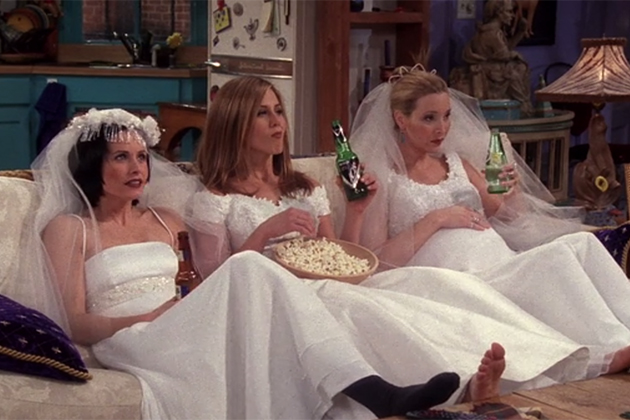
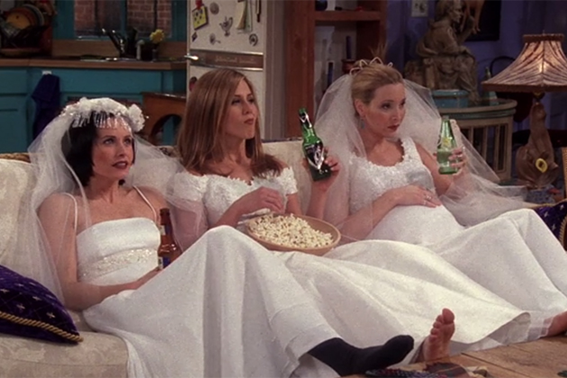
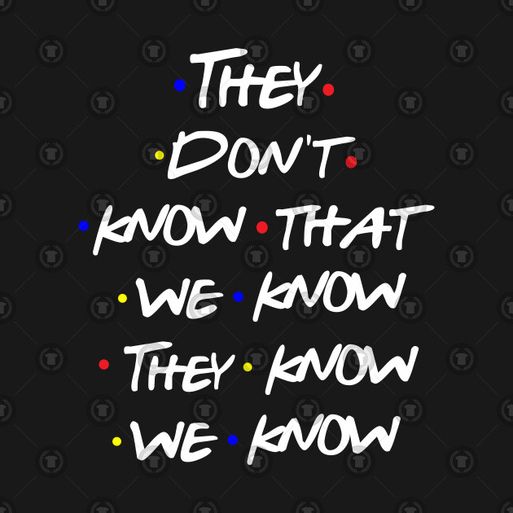
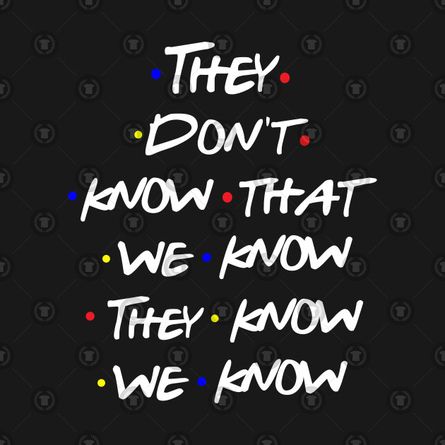

 

Friends is still insanely popular: Why Gen Y are nostalgic for an era they didn't experience
THERE is a simple sitcom that's a massive hit with Gen Y, sweeping high schools and colleges all around the world. Netflix paid $118 million for the US-only rights to stream the show, while screenings on NBC and its subsidiary channels attract a whopping 16 American million viewers each week. Friends, that warm-hearted staple stuck firmly in the '90s, is still a massive success in 2018. And the biggest audience for it isn't those who fondly recall their own flannel-clad youths, but those who are too young to have experienced the show the first time around.
Friends co-creator Marta Kauffman told Vulture in 2016 that her then-17-year-old daughter was asked by a school friend, "Hey, have you seen this new show called Friends?" The same article quotes anxious college students who swear by the show to soothe them to sleep. It's a relationship that isn't shared by other massive and still-popular shows of the era, such as Frasier, 90210 or Seinfeld. Kauffman can't work out the specifics of the deep attraction for a generation that wasn't yet born during the show's original run. "It blows my mind," she admits.
While it is, indeed, mind-blowing, it does also make a certain sense.
With a 10-year run that extended from 1994 to 2004, Friends is current enough that, wacky fashion choices aside, it seems to take place largely in contemporary society. It is, however, a Sliding Doors-style scenario, in which social media was never invented. And boy, does it seem simpler. There are no screens (unless you include the TV that Joey and Chandler once scored free cable porn on), no trawling Tinder for sex and maybe love, no nervous monitoring of Twitter followers, no posing for photos of experiences only half-experienced to upload to Instagram, no mindless scrolling. There is no FOMO as they are all in the same room, at the same time, experiencing the same thing, for the majority of the show's run. To a busy, distracted generation also being sold on the importance of mindfulness exercises, Friends effortlessly embodies the idea of being here now. Sit, talk, listen, pay attention. Experience. Monica might be neurotic and controlling, but you cannot argue she isn't 100 percent present when fretting about her life in Central Perk. (The same probably cannot be said for Joey.)
There is also a sense of permanence that exists within the world of Friends that must prove comforting to a generation with zero job stability, and endless romantic possibilities, where social standing is measured not by the depth of your friendships, but by the number of them, and the measurable manner in which they "like" the "content" of your "personal brand".